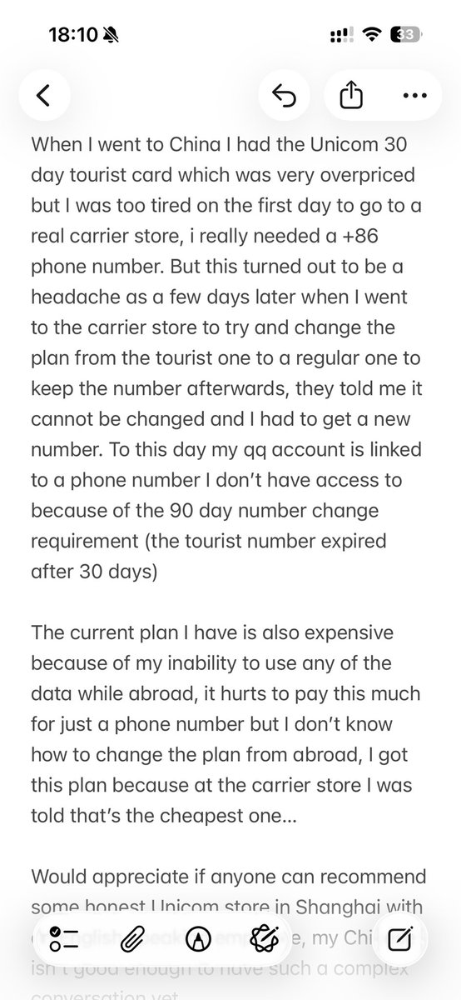
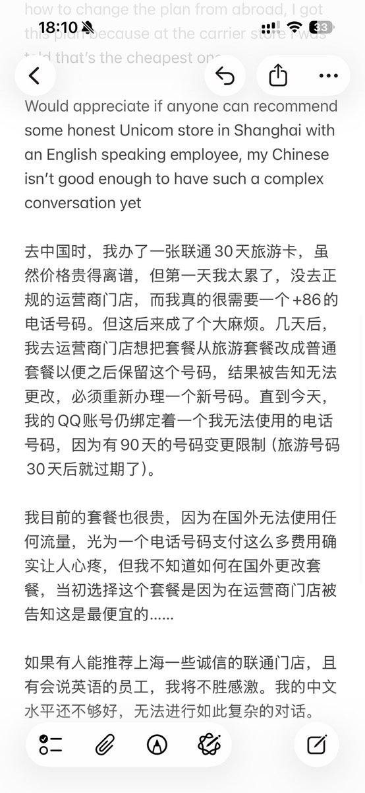

奶昔🥤
@realNyarime
这也是外国人来中国的问题，我解答一下他的困惑吧。作为外宾，你无法直接办理本地人的套餐，包括港澳台人士也办不了
正常的做法是让内地的朋友，开一张保号（电信5元无忧卡201905、移动联通都是8元基础套餐），或是办理19、29元那种大流量，通常来说有好几百GB的，有的还有通话。最后过户给外宾即可
因为线上过户只支持中国内地居民身份证，所以必须你和那位中国朋友一起去才可以最近的营业厅才可以，如果是号码归属地的省内营业厅最好，跨省了可能需要远程就很麻烦但也能补出来（取决于当地营业厅的级别和权限


Casper
@puffercatt
@realNyarime https://t.co/O6ah2KDJag